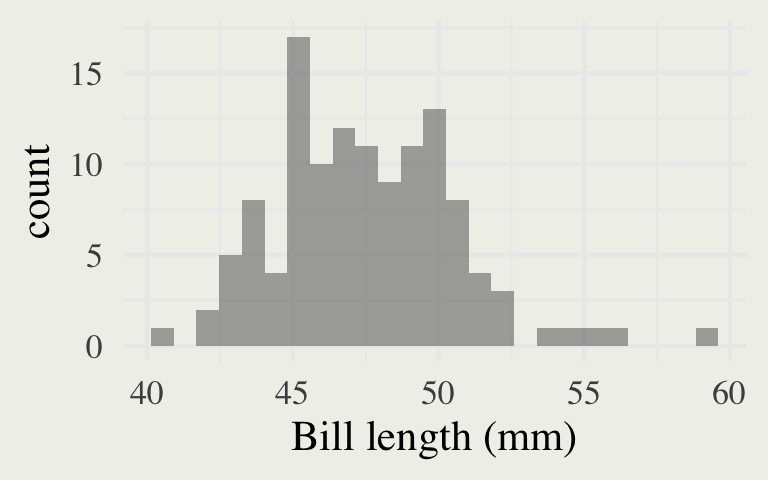
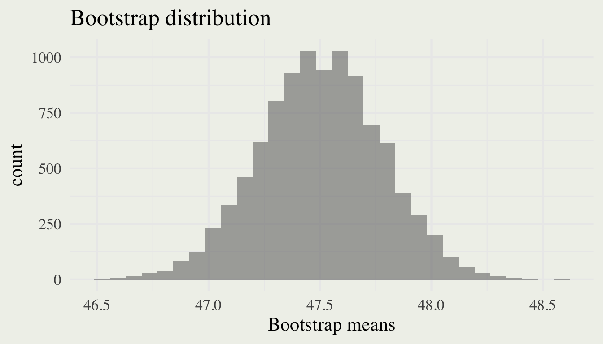
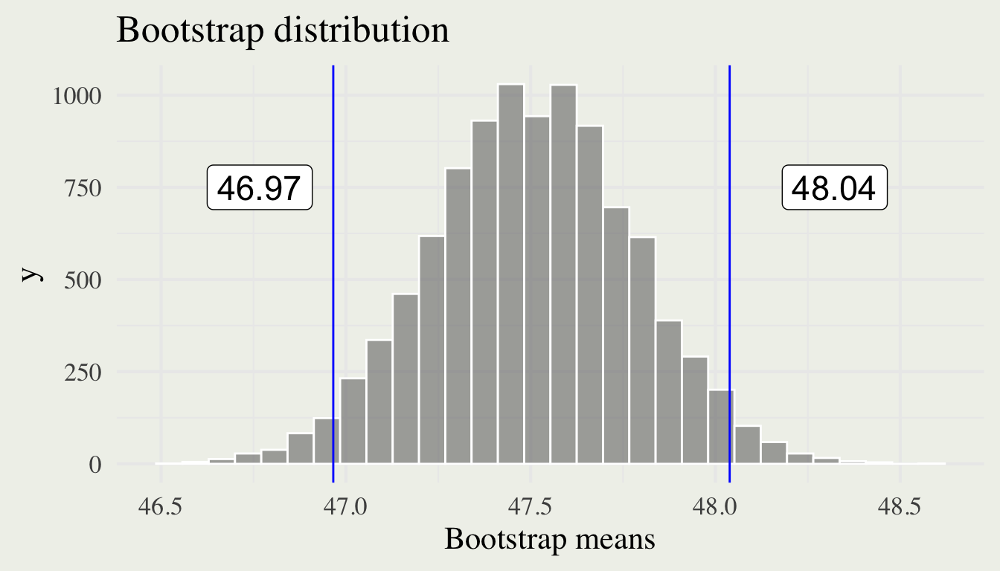
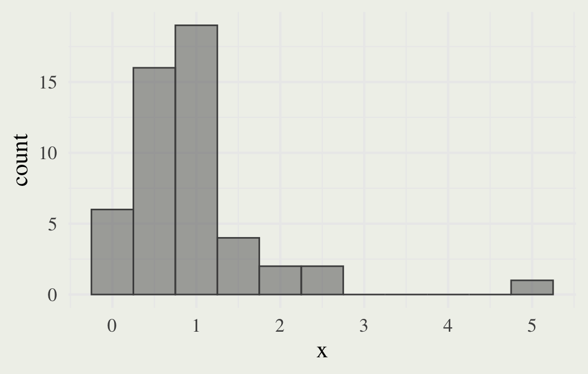
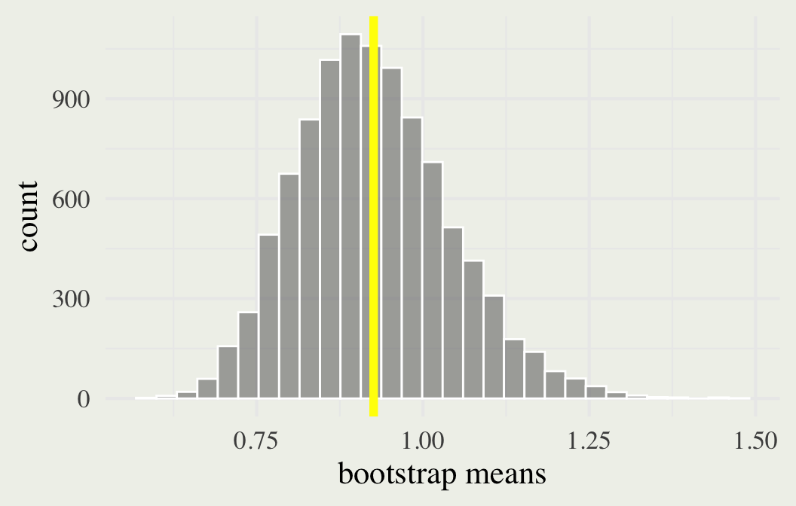
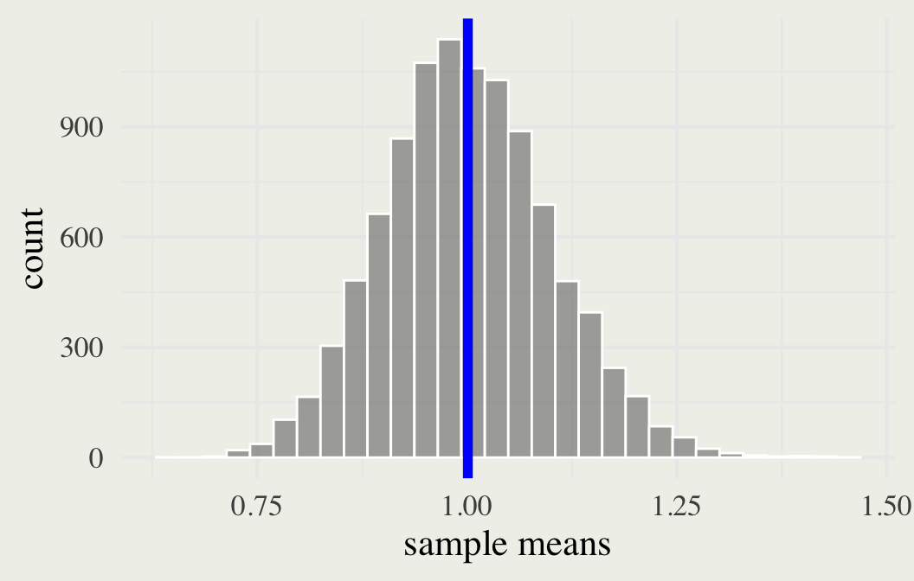

Intro to Confidence Intervals & the bootstrap
Day 13
Carleton College
Stat 250 - Spring 2025
Roadmap
Unit 1: Estimation
- Statistics vs Parameters
- Developing an estimator
- Evaluating the estimator’s behavior:
- sampling distribution
- bias, variance, consistency
Unit 2: Inference
- Once we have an estimator, what does it say about the population parameter?
Roadmap
why a point estimator isn’t enough
Roadmap
We want to develop an interval estimate of a population parameter
Exact method: Find the sampling distribution in closed form (Chapter 4). Requires knowledge of the distribution of the data!
Bootstrap method: Use the sample to approximate the population and simulate a sampling distribution (Chapter 5).
Asymptotic method: Use large-sample theory to approximate the sampling distribution (e.g., appeal to CLT; Chapter 7)
Example
Dr. Kristen Gorman and the Palmer Station, Antarctica LTER, are studying the bill dimensions of a certain species of penguin
They want to estimate the average bill depth and bill length (in mm)

Horst AM, Hill AP, Gorman KB (2020). palmerpenguins: Palmer Archipelago (Antarctica) penguin data. R package version 0.1.0. https://allisonhorst.github.io/palmerpenguins/. doi: 10.5281/zenodo.3960218.
Bill length
| min | Q1 | median | Q3 | max | mean | sd | n | missing | |
|---|---|---|---|---|---|---|---|---|---|
| 40.9 | 45.3 | 47.3 | 49.55 | 59.6 | 47.5 | 3.08 | 123 | 1 |
How can we use our one sample to estimate the population mean bill length for all Gentoo penguins?
- (Theoretical) sampling distribution
- Bootstrap distribution
Bootstrap distribution
Bootstrap percentile interval
A 95% confidence interval can be constructed from the 2.5 and 97.5th percentiles of the bootstrap distribution

The one-sample bootstrap algorithm
Given a sample of size n from a population,
Draw a resample of size n, with replacement, from the sample.
Compute the statistic of interest.
Repeat this resampling process (steps 1-2) many times, say 10,000.
Construct the bootstrap distribution of the statistic.
Your turn
A sample consists of the following values: 8, 4, 11, 3, 7.
Which of the following are possible bootstrap samples from this sample? Why?
8, 3, 7, 11
4, 11, 4, 3, 3
3, 4, 5, 7, 8
7, 8, 8, 3, 4
How does the bootstrap work?
Population
Consider a Gamma(2, 2) population distribution

\[E(X) = 1 \qquad SD(X) = 1/2\]
Sample
Suppose we draw a random sample of size \(n=50\)
| min | Q1 | median | Q3 | max | mean | sd | n |
|---|---|---|---|---|---|---|---|
| 0.061 | 0.445 | 0.757 | 1.065 | 5.088 | 0.925 | 0.824 | 50.000 |
Bootstrap distribution
We can bootstrap our sample and obtain the bootstrap distribution
| min | Q1 | median | Q3 | max | mean | sd | n |
|---|---|---|---|---|---|---|---|
| 0.590 | 0.845 | 0.918 | 0.998 | 1.481 | 0.926 | 0.115 | 10,000.000 |
Sampling distribution
We could also draw many different samples and obtain the sampling distribution
| min | Q1 | median | Q3 | max | mean | sd | n |
|---|---|---|---|---|---|---|---|
| 0.632 | 0.933 | 0.997 | 1.065 | 1.443 | 1.001 | 0.100 | 10,000.000 |
Key comparisons
| Mean | SD | Bias | |
|---|---|---|---|
| Population | 1 | 0.5 | |
| Sample | 0.925 | 0.925 | |
| Sampling distribution | 1.001 | 0.1 | 0.001 |
| Bootstrap distribution | 0.926 | 0.115 | 0.001 |
implementation
# Subsetting to get only one species
gentoo <- dplyr::filter(penguins, species == "Gentoo")
# Bookkeeping
y <- gentoo$bill_length_mm
n <- nrow(gentoo) # sample size
N <- 10^4 # desired no. resamples
boot_means <- numeric(N) # a place to store the bootstrap stats
# Resampling from the sample
for (i in 1:N) {
x <- sample(y, size = n, replace = TRUE)
boot_means[i] <- mean(x, na.rm = TRUE) # you can choose other statistics
}
# Calculate a 95% percentile interval
quantile(boot_means, probs = c(0.025, 0.975))Your turn: theoretical example
Consider a population that has a gamma distribution with parameters r=5, 𝜆=1∕4.
- Use simulation (with n = 200) to generate an approximate sampling distribution of the mean; plot and describe the distribution.
- Now, draw one random sample of size 200 from this population. Create a histogram of your sample and find the mean and standard deviation.
- Compute the bootstrap distribution of the mean for your sample, plot it, and note the bootstrap mean and standard error.
- Compare the bootstrap distribution to the approximate theoretical sampling distribution by creating a table like slide 17
Repeat (a)–(e) for sample sizes of n = 50 and n = 10. Describe carefully your observations about the effects of sample size on the bootstrap distribution.
Your turn: data example
The Bangladesh data set contains information about arsenic, cobalt, and chlorine concentrations from a sample of 271 water wells in Bangladesh.
- Conduct EDA on the chlorine concentrations and describe the salient features.
- Find the bootstrap distribution of the mean.
- Find and interpret the 95% bootstrap percentile confidence interval.
- What is the bootstrap estimate of the bias? What fraction of the bootstrap standard error does it represent?